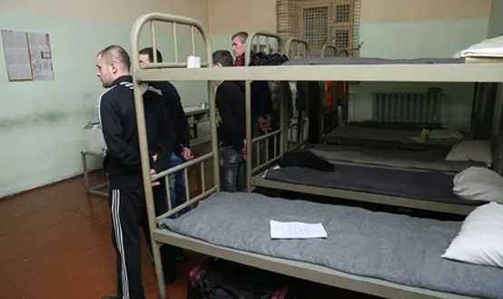

Сексуальные (половые) преступления регулируются ст. 131–135 УК РФ (глава 18).
Видовым объектом данной категории преступлений является сложившийся уклад отношений между полами, основанный на половой свободе и половой неприкосновенности личности, добровольности половой связи каждого из вступающих в нее субъектов.
Половая свобода – право самостоятельно, без принуждения определять полового партнера, это понятие распространяется на лиц, достигших 16-летнего возраста.
Половая неприкосновенность – это запрет на половое сношение с лицом, не достигшим 16 лет, защищающий физическое и нравственное развитие подростков.
В некоторых составах предусмотрены дополнительные объекты посягательств – жизнь и здоровье личности (при изнасиловании, совершении насильственных действий сексуального характера), честь и достоинство личности (при понуждении к действиям сексуального характера), нормальное нравственное и физическое развитие подростков в возрасте до 16 лет (при совершении полового сношения и иных действий сексуального характера с лицом, не достигшим 16-летнего возраста).
Объективная сторона данных преступлений характеризуется совершением активных действий. По конструкции составы формальные, кроме отдельных квалифицированных составов, являющихся материальными (например, насильственные действия сексуального характера, если они повлекли по неосторожности смерть лица).
Субъективная сторона всех рассматриваемых преступлений характеризуется виной в виде прямого умысла. Субъекты — физические вменяемые лица, достигшие возраста уголовной ответственности, установленного законом для данного вида преступления. Субъект изнасилования — специальный, так как им может быть только лицо мужского пола.
Все преступления, посягающие на половую неприкосновенность и половую свободу личности, можно подразделить на две группы.
Насильственные посягательства
1) Изнасилование — ст. 131 УК. Потерпевшими от изнасилования могут быть только лица женского пола. Объективная сторона изнасилования характеризуется половым сношением мужчины с женщиной, совершенным против ее воли, с применением насилия или с угрозой его применения либо с использованием беспомощного состояния потерпевшей. Способы совершения преступления предусмотрены в качестве обязательных признаков объективной стороны преступления: применение насилия (побои, причинение легкого или средней тяжести вреда здоровью, связывание, приведении жертвы в бессознательное состояние), угрозы его применения либо использование беспомощного состояния потерпевшей. Иные способы (например, обман – обещание заключить брак после полового акта) не наказуемы. Преступление считается оконченным с момента начала полового сношения, независимо от того, был ли половой акт завершен виновным в физиологическом смысле.
С субъективной стороны преступление характеризуется виной в виде прямого умысла. Субъект — физическое вменяемое лицо мужского пола, достигшее 14-летнего возраста.
Квалифицирующими признаками изнасилования являются: совершение группой лиц; совершение с угрозой убийством или причинением тяжкого вреда здоровью, а также совершенное с особой жестокостью по отношению к потерпевшей или к другим лицам; заражение потерпевшей венерическим заболеванием; изнасилование заведомо несовершеннолетней; изнасилование, повлекшее по неосторожности смерть потерпевшей; изнасилование потерпевшей, заведомо не достигшей четырнадцатилетнего возраста.
2) Насильственные действия сексуального характера — ст. 132 УК. Данная статья охватывает неестественные или извращенные формы половых сношений, выходящие за пределы традиционного полового акта (мужеложство и лесбиянство, гетеросексуальное сношение в виде орально-генитальных или анально-генитальных контактов и т.п.).
Общей с изнасилованием характеристикой является недобровольность таких действий для потерпевшего, т.е. применение насилия, угроз насилием или использование беспомощного состояния. Различия же состоят в том, что, как было указано, половое сношение совершается в неестественной форме, а также в том, что потерпевшими от рассматриваемого преступного деяния могут выступать лица как женского, так и мужского пола.
Субъективная сторона характеризуется виной в виде прямого умысла. Субъект — физическое вменяемое лицо мужского и женского пола, достигшее 14-летнего возраста.
Квалифицированные виды рассматриваемого деяния идентичны видам изнасилования.
3) Понуждение к действиям сексуального характера — ст. 133 УК. Потерпевшими от преступления могут быть лица как женского, так и мужского пола. Объективная сторона характеризуется деянием в виде понуждения лица к половому сношению, мужеложству, лесбиянству или совершению иных действий сексуального характера путем шантажа (угрозы распространить сведения, опорочивающие, компрометирующие или подрывающие репутацию потерпевшего), угроз уничтожением, повреждением или изъятием имущества, а также с использованием материальной или иной зависимости потерпевшего (потерпевшей). Понуждением не считается обещание предоставить зависимому лицу какие-то дополнительные блага, льготы, покровительство за вступление в половой контакт.
Преступление является оконченным с момента понуждения независимо от того, осуществится половой контакт между виновным и понуждаемым либо нет.
С субъективной стороны преступление характеризуется умышленной виной в виде прямого умысла. Субъект — физическое вменяемое лицо как мужского, так и женского пола, достигшее 16-летнего возраста. При использовании зависимого положения потерпевшего — субъект специальный, т.е. лицо, от которого потерпевший материально или иным образом зависим.
Преступления, совершаемые без применения насилия
1) Половое сношение и иные действия сексуального характера с лицом, не достигшим 16-летнего возраста, — ст. 134 УК. Потерпевшими являются лица как женского, так и мужского пола, не достигшие 16-летнего возраста. Внутри этой категории лиц отдельно выделены лица 12-14 лет – указанные действия в отношении данной возрастной группы являются еще более опасными. Объективная сторона выражается в совершении полового сношения, мужеложства или лесбиянства с лицом, не достигшим 16-летнего возраста, а также в возрасте от 12 до 14 лет.
В отличие от насильственных сексуальных преступлений, в данном случае речь идет о добровольном со стороны потерпевшего половом контакте с виновным. Однако малолетство потерпевших свидетельствует об их беспомощном состоянии, поскольку уровень развития ребенка в определенном возрасте не позволяет ему понимать характер и значение совершаемых с ним действий. Если подросток понимал характер и значение совершаемых с ним действий и вступал в сексуальный контакт по своей воле, применяется ст. 134 УК, в противном случае — ст. 131 или ст. 132 УК. Преступление является оконченным с момента совершения полового сношения, мужеложства либо лесбиянства.
Субъективная сторона преступления характеризуется умышленной виной в виде прямого умысла. Виновный должен достоверно знать о недостижении потерпевшим 14-летнего возраста. Субъект — физическое вменяемое лицо как мужского, так и женского пола, достигшее 18-летнего возраста.
Квалифицирующими признаками данного деяния являются: совершение полового сношения с двумя или более лицами; группой лиц; лицом, имеющим судимость за ранее совершенное преступление против половой неприкосновенности несовершеннолетнего.
Лицо, впервые совершившее данное преступление, освобождается судом от наказания, если будет установлено, что это лицо и совершенное им преступление перестали быть общественно опасными в связи со вступлением в брак с потерпевшей (потерпевшим).
В случае, если разница в возрасте между потерпевшей (потерпевшим) и подсудимым (подсудимой) составляет менее четырех лет, к последнему не применяется наказание в виде лишения свободы за совершенное деяние;
2) Развратные действия — ст. 135 УК. Потерпевшими являются лица мужского и женского пола, не достигшие 16-летнего возраста, а также отдельно – в возрасте 12-14 лет. Объективная сторона характеризуется совершением развратных действий без применения насилия. Развратными действиями являются действия, не связанные с совершением полового сношения – прикосновения к интимным частям тела, принятие перед ним непристойных поз, демонстрация половых органов, показ порнографических фильмов, изображений и т.п. Преступление окончено с момента совершения развратного действия.
Субъективная сторона характеризуется виной в виде прямого умысла. Виновный должен быть осведомлен о недостижении потерпевшим конкретного возраста. Субъект — физическое вменяемое лицо, достигшее 18-летнего возраста.